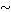
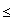
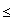
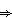

B is connected if A and B are and A
B is connected if A and B are and A  B
B 
 to prove transitivity. [The equivalence classes are the components.]
to prove transitivity. [The equivalence classes are the components.]
It is clear that  is reflexive and symmetric. Use the fact that A B is connected if A and B are and A B to prove transitivity. [The equivalence classes are the components.]
Again it is clear that  is symmetric and reflexive. To prove transitivity, take a path
is symmetric and reflexive. To prove transitivity, take a path  connecting p and q and a path
connecting p and q and a path  connecting q and r and make a new path
connecting q and r and make a new path  by (t) = (2t) if 0  t 1/2 and (2t-1) otherwise.. Then connects p and r.
by (t) = (2t) if 0  t 1/2 and (2t-1) otherwise.. Then connects p and r.
Since a path (which is the continuous image of the connected interval) is connected it follows that pathwise connected  connected